01 · INTRODUCTION
Overview

The biological history of Kaimere presents a fundamental distinction between the origin of life on the planet and the origin of the organisms that dominate its modern ecosystems. Although Kaimere possesses an extraordinary diversity of plants, animals, and other multicellular organisms, none of these are truly indigenous to the planet. All are functionally descended from Earth organisms collected through the Portal, replicated on Kaimere, and subsequently subjected to millions of years of independent evolution. The dinosaurs, pterosaurs, marine reptiles, mammals, flowering plants, and other familiar components of Kaimere's biosphere therefore represent the descendants of organisms whose ultimate ancestry lies on Earth.
This does not mean that Kaimere lacks native life. On the contrary, the planet possesses an extensive indigenous biosphere that predates the introduction of terrestrial organisms and remains fundamental to the functioning of its modern ecosystems. Its native organisms are unicellular, ranging from microscopic aquatic microorganisms to enormous visible colonies of photosynthetic cells. Some form extensive aggregations that resemble plants or algae, while others exist as highly organized clonal swarms capable of manipulating their surroundings and interacting with multicellular hosts.
The indigenous organisms of Kaimere are particularly important because they perform functions that, on Earth, are distributed among a much broader assortment of organisms. They form a substantial component of the planet's photosynthetic food base, influence nutrient cycling, modify terrestrial and aquatic environments, and participate in complex symbiotic relationships with multicellular organisms. Certain species have even evolved collective behaviors sufficiently sophisticated to resemble intelligence. The most extraordinary of these organisms are the swarm-forming life forms that Kaimerans call magic.
Magic is not an energy, supernatural force, or immaterial phenomenon in the conventional biological interpretation of the subject. It is a diverse assemblage of indigenous microorganisms that interact with their surroundings through collective organization. Some species manipulate their environment directly, while others establish relationships with multicellular hosts, influencing their development, physiology, and behavior. Their activities are frequently imperceptible to ordinary observation, and their effects can appear inexplicable to organisms that do not understand their biological nature. This has contributed to the central role of magic in Kaimerean cultures and natural philosophy.
The Portal itself is also an organism of this indigenous biosphere. Rather than being an artificial structure or a conventional technological device, it is a collective swarm of microscopic life forms possessing a form of distributed cognition. Its intelligence is more appropriately compared to that of a computer than to an animal. Through specialized extensions or satellites, it gathers information about distant environments, analyzes the molecular composition of resources, and uses the information to reproduce desirable materials and organisms within its territory. Its ability to collect and replicate biological structures ultimately brought the organisms of Earth to Kaimere.
The relationship between these indigenous life forms and the Earth-derived organisms is consequently unusual. Kaimere's multicellular ecosystems are not the products of an independent evolutionary origin, yet they have developed in a world whose ecological foundations were established by native microorganisms. The indigenous biosphere existed before the arrival of Earth life, enabled the Portal to replicate multicellular organisms, and continues to influence their evolution through its environmental and symbiotic interactions.
Understanding the origin of native life is therefore essential to understanding Kaimere itself. The history of its indigenous microorganisms is not a minor supplement to the evolutionary history of its visible organisms. It is the biological foundation upon which the entire modern biosphere was established.
02 · The Beginning
The Primordial Unicellular Biosphere

The earliest known life on Kaimere consisted entirely of unicellular organisms. These microorganisms occupied the planet's oceans, waterways, and terrestrial environments long before the arrival of Earth-derived plants and animals. Their evolutionary history is incompletely understood, but they established the biological systems that would eventually support the planet's highly productive ecosystems.
Most native microorganisms are microscopic and aquatic. They inhabit the oceans and freshwater systems, where they contribute to the photosynthetic plankton communities that form the base of Kaimere's food webs. Their abundance and diversity are particularly significant in the marine environment, where photosynthetic microorganisms support large populations of small aquatic consumers and, indirectly, the enormous predators that dominate the oceans.
Not all indigenous microorganisms are restricted to water. Certain species can survive periods of dehydration and become established in terrestrial environments, while others are capable of remaining suspended in the atmosphere. These adaptations allow native life to occupy a much broader range of environments than its predominantly microscopic size might suggest. The indigenous biosphere is therefore not simply an aquatic microbial community, but a planet-wide assemblage of organisms capable of maintaining populations in water, soil, exposed surfaces, and the air.
The earliest native ecosystems were not structured around the familiar biological communities of modern Kaimere. There were no forests of trees, grasslands dominated by flowering plants, or large herbivores and predators. Instead, much of the planet's biological productivity was supported by microorganisms and their extensive colonies. Some of these organisms developed collective growth patterns that allowed them to occupy large areas and become visible to the naked eye.
Among the most important of these early organisms were the photosynthetic colonies that would later become known as purple algae.
03 · The first "Plants" on Kaimere
The Purple Algae and the First Major Photosynthetic Communities
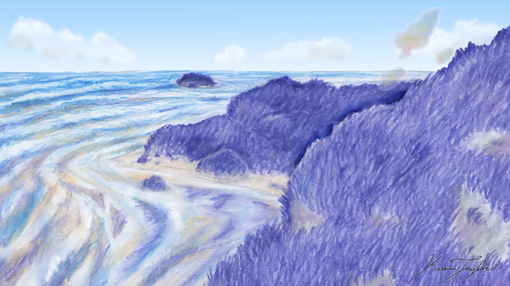
The organisms commonly known as purple algae were among the dominant forms of life on Kaimere for millions of years. They formed extensive visible aggregations of photosynthetic microorganisms, occupying large portions of the planet's aquatic and terrestrial environments. Their abundance was such that they dominated the biological character of Kaimere before the introduction of Earth-derived plants.
Despite their common name, purple algae are not true algae. They are indigenous microbial organisms that employ retinal-based photosynthesizers rather than the chlorophyll-based systems characteristic of familiar terrestrial plants and algae. Their photosynthetic apparatus absorbs green wavelengths of light rather than reflecting them, producing the distinctive coloration responsible for their appearance.
The resemblance to algae is primarily ecological and structural. Like algae, these organisms can form large aggregations, exploit sunlight, and contribute substantially to the primary productivity of aquatic environments. Their individual cells remain unicellular organisms, but their capacity to form extensive colonies allows them to occupy areas large enough to be perceived as macroscopic growths.
The purple algae were particularly important because they established a substantial photosynthetic foundation for Kaimere's early ecosystems. Their colonies provided food for other microorganisms and contributed to the productivity of the aquatic environments that would later support more complex food webs. Their presence also helped shape the planet's terrestrial environments, where colonies could develop across surfaces and survive conditions that would be unsuitable for many aquatic organisms.
The importance of purple algae did not disappear following the introduction of Earth-derived plants. Although plants subsequently transformed the planet's terrestrial ecosystems, purple algae remained a significant component of Kaimere's indigenous biosphere. Their descendants continue to contribute to the productivity of its oceans and waterways, where they form part of the photosynthetic plankton base supporting aquatic food chains.
The rise of purple algae also preceded the development of the Portal swarms into the dominant ecological force on the planet. These swarms became major consumers of photosynthetic microorganisms, particularly purple algae, and eventually developed an unusually close ecological relationship with them.
04 · Start of Magic Colonies
The Emergence of Collective Swarm Organisms
Among the indigenous microorganisms of Kaimere, several groups developed a distinctive form of collective organization. Rather than existing as independent cells whose behavior was entirely autonomous, these organisms formed clonal swarms capable of coordinating their activities across relatively large areas.
Individually, the constituent organisms are too small to be observed without magnification. As a collective, however, they can produce visible effects, sometimes appearing as a haze or mist. Their behavior is governed by interactions within the swarm, allowing a population of microscopic organisms to act in a coordinated manner.
The degree of organization varies considerably between groups. Some swarms manipulate their surroundings by breaking down barriers, moving objects, or retrieving nutrients. Others establish relationships with larger organisms, using their hosts as a means of interacting with the environment. Their activities can involve the redistribution of materials, modification of biological processes, and the optimization of local habitats.
The collective organization of these microorganisms is sometimes described as a form of consciousness. This does not necessarily imply intelligence in the manner of an animal possessing an individual nervous system. Rather, the swarm behaves as an integrated system whose constituent organisms collectively process information and coordinate their responses.
This distinction is especially important for understanding the Portal. Its intelligence appears to function more like a distributed computational system than an animal mind. The swarm gathers information, processes it, and undertakes actions according to the needs of its collective territory. It does not necessarily perceive or interpret the world in the same manner as a multicellular organism.
The evolutionary success of these swarms was considerable. Their ability to manipulate materials and alter local environments allowed them to exploit resources that would have been inaccessible to organisms acting independently. Some developed highly efficient systems for obtaining nutrients, while others evolved relationships with hosts that provided access to new environments and sources of energy.
Over time, the most successful of these groups became among the dominant organisms on Kaimere. Their influence would eventually extend across much of the planet, fundamentally altering the relationship between its indigenous microorganisms and the surrounding environment.
05 · How Kaimere Changed Forever
The Origin and Evolution of the Portal Swarms
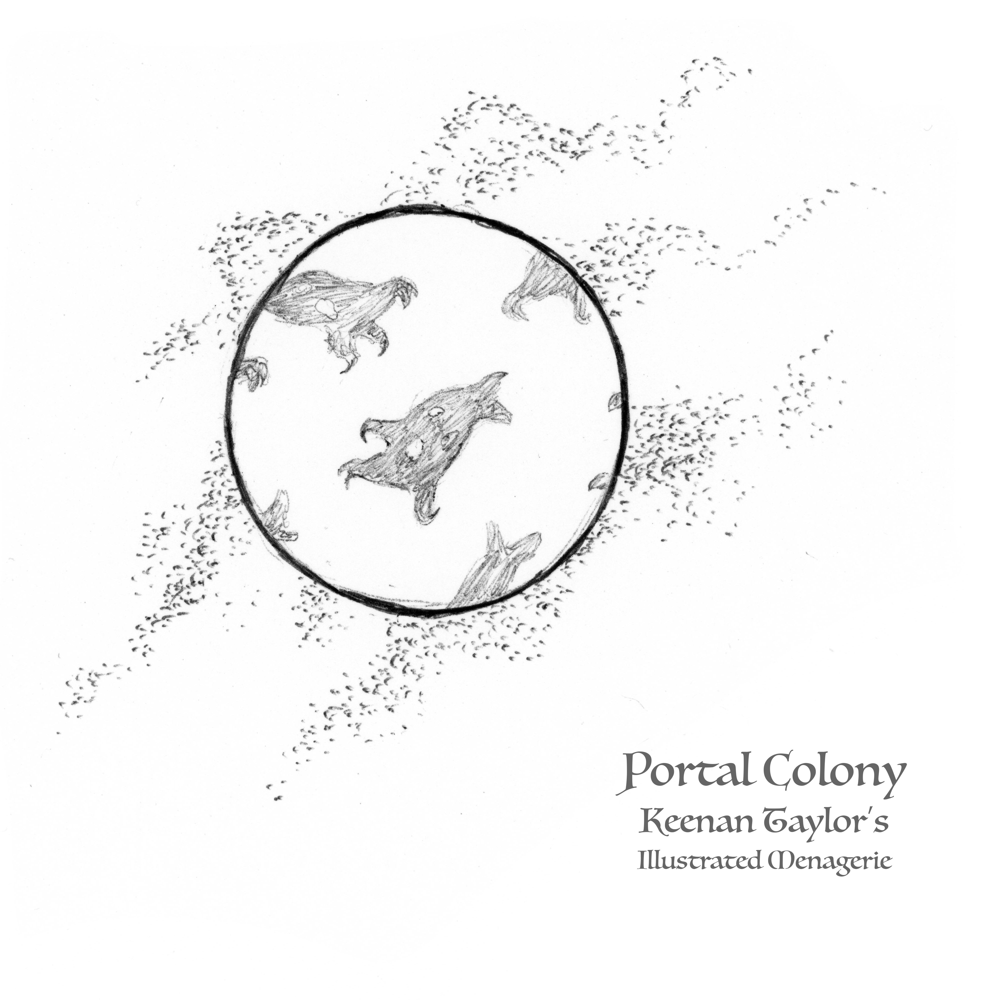
The Portal is one of the most unusual organism clouds in the known biosphere of Kaimere. It belongs to the indigenous group of collective swarm organisms, possessing a degree of internal coordination that allows it to gather information, acquire resources, and reproduce complex biological structures.
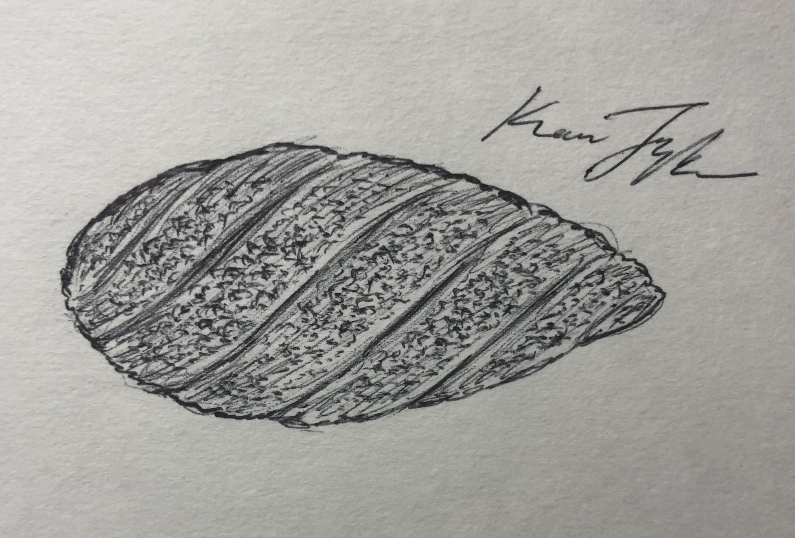
Its success is based upon a distinctive method of environmental optimization. A Portal swarm can send out a portion of its collective population as a satellite, effectively extending its activity into a distant environment. This satellite gathers water, minerals, food, and other resources, examining their molecular composition and transmitting the resulting information back to the principal swarm.
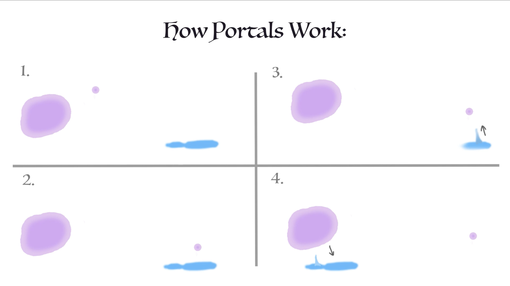
The principal swarm can then use this information to reproduce desirable resources within its own territory. By understanding the composition of materials available elsewhere, it can replicate them using the elements present in its surroundings. This process allows the swarm to improve its habitat without relying exclusively upon the availability of the original resource.
The information-gathering and replication system proved extraordinarily successful. Rather than depending upon local environmental conditions, Portal swarms could acquire information about distant resources and reproduce materials that improved their immediate surroundings. Their satellites effectively extended the ecological reach of the principal swarm, allowing it to interact with environments far beyond its original territory.
For millions of years, these Portal organisms and their far-reaching colonies dominated Kaimere's land and marine environments. Their success was based partly upon their ability to cultivate photosynthetic organisms, particularly purple algae, in locations and quantities suited to their needs. By encouraging the growth of these colonies, they created reliable sources of food that could sustain their own populations.
This relationship represents one of the earliest known examples of domestication on Kaimere. The purple algae were effectively the first domesticated life form, cultivated by indigenous swarms long before the arrival of multicellular organisms from Earth or the development of agriculture among Kaimerans.
The Portals' environmental influence was extensive. Their colonies could cultivate desired organisms, retrieve nutrients, and modify the availability of resources across large territories. In this sense, they functioned as biological ecosystem engineers, transforming the environments around them to favor their continued existence.
Their influence was not restricted to a single habitat type. Portal swarms and their satellite colonies operated across both land and sea, contributing to the development of the planet's microbial ecosystems. Their ability to reproduce resources allowed them to maintain extensive territories and establish ecological systems that were increasingly shaped by their own requirements.
The modern Portal network is therefore not an artificial addition to Kaimere's natural history. It is the continuation of a native biological system whose evolutionary success predates the introduction of Earth's multicellular organisms.
06 · The Beginning of the Harvests
The Collection and Replication of Earth Life
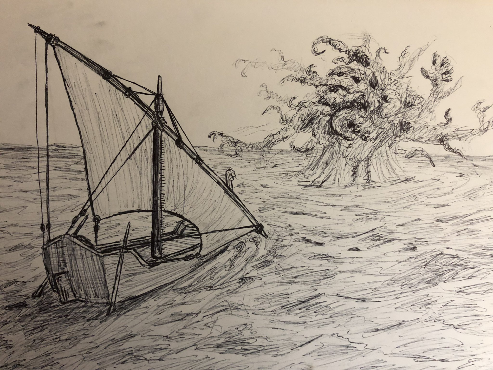
The same mechanism that enabled Portal swarms to optimize their local environments eventually allowed them to reproduce complex multicellular organisms. As their satellites traveled across Earth, they encountered an extraordinary diversity of biological structures that could not be understood solely through the study of their immediate surroundings.
The satellite organisms collected materials and examined their composition. In the process, they consumed and disassembled organisms, breaking them down atom by atom in an effort to understand their construction. This was not simply the collection of food or nutrients. It was a process of acquiring detailed molecular information about the structures encountered.
Through this activity, the satellite populations gained an understanding of the composition of complex multicellular organisms. Their investigations extended beyond the basic materials from which living bodies were constructed to the complex arrangements that gave rise to recognizable biological forms.

Once the satellite had acquired sufficient information, it transmitted the collected data back to its home swarm on Kaimere, located dozens of light-years away. The principal swarm could then use this information as a blueprint to reproduce the organism using elements available within its own environment.
The process effectively allowed the Portal to create copies of Earth's multicellular life. These were not naturally evolved organisms originating from Kaimere's indigenous biosphere. They were replicated forms based upon biological structures acquired through the satellite system.
Over millions of years, successive collections introduced a remarkable diversity of Earth life to Kaimere. Plants, animals, and other multicellular organisms became established on the planet, where they evolved independently under its distinctive environmental conditions.

This explains the unusual origin of Kaimere's modern biodiversity. Its multicellular organisms may be highly adapted to the planet, and many have developed forms and ecological specializations unlike their Earth relatives, but their ultimate biological ancestry remains terrestrial. The portal did not create independent native lineages of multicellular plants and animals; it reproduced organisms whose original evolutionary histories occurred on Earth.
The evolutionary independence of these organisms began after their establishment on Kaimere. Once replicated, populations experienced the effects of local environmental conditions, geographical isolation, competition, predation, and other selective pressures. Their descendants subsequently diversified into the distinctive organisms that define the modern planet.
Consequently, Kaimere's familiar dinosaurian, mammalian, and botanical lineages are not native in the strictest evolutionary sense. They are descendants of Earth organisms, modified by millions of years of independent evolution. The indigenous microorganisms, by contrast, represent the planet's original life and remain distinct from the multicellular organisms introduced through the Portal.
07 · Magic Swarms and their Impacts
The Diversification of Environmental Manipulating Swarms
The Portal swarms are not the only indigenous organisms capable of manipulating their surroundings. Other groups of collective microorganisms have evolved different methods of environmental modification, often without reproducing resources in the same manner.
Some break down physical barriers, allowing access to materials or regions that would otherwise be inaccessible. Others move objects or retrieve nutrients through coordinated activity. Their behavior can resemble the work of an intelligent agent, although it is produced through the collective actions of microscopic organisms.
Certain swarms have also evolved the ability to establish relationships with multicellular hosts. Rather than manipulating their environment entirely independently, they inhabit another organism and use its body as a means of interacting with the surrounding ecosystem. Their activities can alter the host's physiology, behavior, and capacity to influence its habitat.
These relationships are particularly important because many of the effects attributed to magic occur through interactions that are not readily visible. An observer may see an animal displaying unusual physical abilities, recovering from injuries, resisting environmental stress, or behaving in a manner that appears inexplicable. The cause, however, may be the activity of an unseen microbial swarm associated with its body.
The microorganisms responsible for these effects are collectively described as magic by Kaimerans. From a biological perspective, magic is therefore not a single organism or phenomenon, but a broad category encompassing multiple species of endemic life with different ecological strategies.
The term is also somewhat misleading because it implies a unified system of supernatural capabilities. In reality, different magical organisms interact with hosts and environments in distinct ways. Some may have only subtle physiological effects, while others can produce much more dramatic alterations. Their common characteristic is their ability to act collectively and influence the biological or physical conditions around them.
08 · Viral Vs. Hereditary
The Evolution of Host-Bound Magic
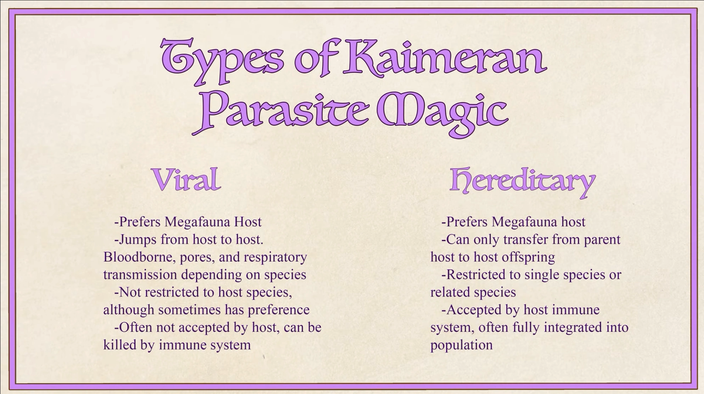
The most familiar forms of magic are those that establish relationships with multicellular organisms. These microorganisms bind to a host and use its body as a habitat, frequently influencing its physiology in ways that improve the survival of the swarm.
The relationship between host and swarm is variable. Some organisms readily accommodate the presence of magical microorganisms, while others resist colonization in a manner comparable to an immune response against a disease. The outcome depends upon the biological compatibility of the host and the characteristics of the microbial swarm.
Megafauna are particularly favored hosts. Their relatively long lifespans provide a stable environment in which a swarm can persist, while their size and ecological influence make them valuable partners in modifying the surrounding environment. A large animal may travel substantial distances, disturb vegetation, alter habitats, or otherwise influence local ecosystems. By inhabiting such an organism, a swarm gains access to a mobile and influential biological platform.
However, large animals also possess sophisticated immune systems capable of resisting aggressive microbial populations. This creates an evolutionary constraint. For many magical organisms, the most successful strategy is not to overwhelm the host, but to remain relatively inconspicuous. Swarms that produce excessive or conspicuous physiological changes risk provoking a defensive response from the host's body.
As a result, natural magic often has a relatively minor effect upon its host. Its activities may be limited to subtle improvements in health, durability, or other physiological characteristics. The relationship can remain largely undetected throughout the host's life, with the microbial population benefiting from a stable habitat without imposing substantial costs upon the organism.
This tendency toward covert inhabitation is an important feature of the evolution of host-bound magic. The continued survival of the swarm is linked to the health and longevity of its host, and a relationship that causes the host to die prematurely is generally disadvantageous unless the swarm can successfully transfer to another organism. Over time, different forms of host-bound magic developed two broad reproductive and ecological strategies. Kaimeran naturalists classify these as viral magic and hereditary magic.
09 · Viral Expansion of Magic
The Evolution of Viral Magic
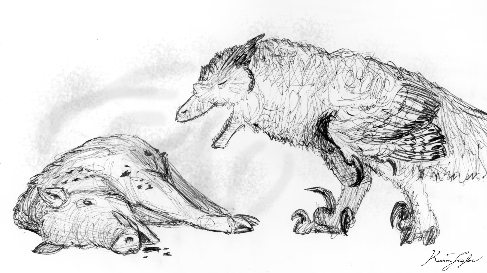
Viral magic consists of microbial swarms that can bind to a broad range of potential hosts. Rather than depending upon a single host species, these organisms are adapted to move between available organisms as opportunities arise.
The swarm generally remains together while inhabiting a host, although it may occasionally spread into nearby organisms within the same ecosystem. When its host dies, the swarm leaves the body and seeks another suitable organism. This allows viral magic to persist through repeated host changes without becoming dependent upon the continued survival of a particular species.
The evolutionary advantage of this strategy is flexibility. A swarm capable of occupying several species is less vulnerable to the extinction of any single host. It may transfer between different animals or establish itself within other organisms in its immediate environment, thereby maintaining its population through changing ecological conditions.
Viral magic is therefore widespread in environments where suitable hosts are abundant. Its presence can be subtle, and most strains produce relatively little visible change in the organisms they inhabit. Many hosts may carry viral magic without exhibiting obvious symptoms or unusual characteristics.
The designation viral does not imply that these organisms are identical to viruses in the conventional biological sense. It is a practical classification used by Kaimeran naturalists to distinguish swarms that move between hosts from those that have evolved a more specialized relationship with a particular host lineage. The distinction is primarily ecological and reproductive. Viral magic is not dependent upon a single host species, while hereditary magic has become closely associated with the evolutionary history of a particular population or species.
10 · Hereditary Magic and Longevity
The Evolution of Hereditary Magic

Hereditary magic consists of swarms that have evolved in association with particular host populations or species. Unlike viral magic, which can move between different hosts, hereditary magic is highly specialized. Its continued survival is closely linked to the persistence of its host lineage.
The swarm generally remains together while inhabiting a host, although it may occasionally spread into nearby organisms within the same ecosystem. When its host dies, the swarm leaves the body and seeks another suitable organism. This allows viral magic to persist through repeated host changes without becoming dependent upon the continued survival of a particular species.
The evolutionary advantage of this strategy is flexibility. A swarm capable of occupying several species is less vulnerable to the extinction of any single host. It may transfer between different animals or establish itself within other organisms in its immediate environment, thereby maintaining its population through changing ecological conditions.
Viral magic is therefore widespread in environments where suitable hosts are abundant. Its presence can be subtle, and most strains produce relatively little visible change in the organisms they inhabit. Many hosts may carry viral magic without exhibiting obvious symptoms or unusual characteristics.
The designation viral does not imply that these organisms are identical to viruses in the conventional biological sense. It is a practical classification used by Kaimeran naturalists to distinguish swarms that move between hosts from those that have evolved a more specialized relationship with a particular host lineage. The distinction is primarily ecological and reproductive. Viral magic is not dependent upon a single host species, while hereditary magic has become closely associated with the evolutionary history of a particular population or species.
11 · Mutants and Animal Demons
Aggressive Magic and Pathological Host Takeover
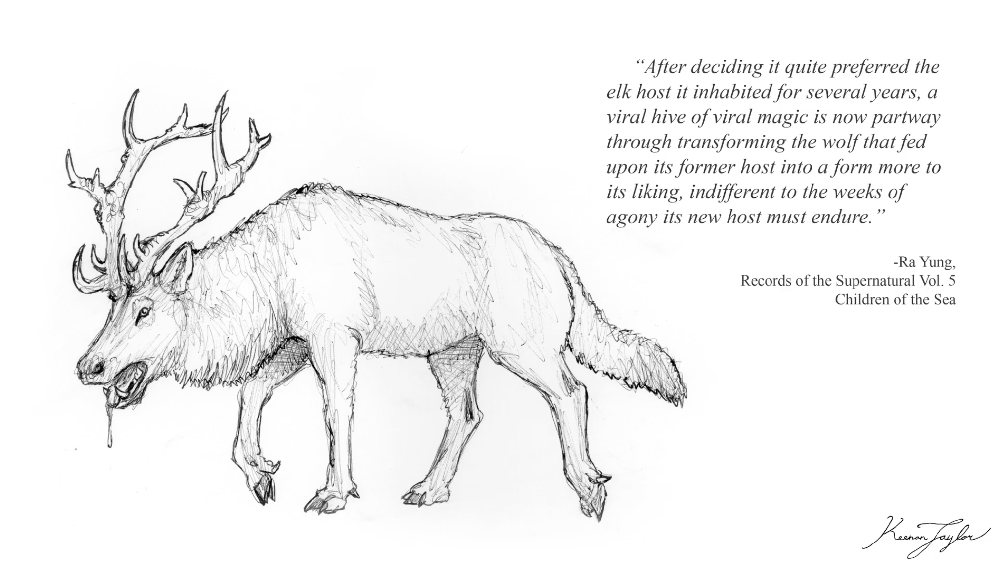
Although most magical swarms maintain relatively stable relationships with their hosts, a small number of strains have developed much more aggressive strategies. These organisms attempt to take control of the host's body rather than maintaining a relatively unobtrusive symbiosis.
Such strains are rare, partly because their behavior is inherently destructive. By overwhelming the host's normal physiological processes, they frequently cause its death. A swarm that kills its host too rapidly may lose the very environment upon which its own survival depends. Its continued existence consequently requires it to find another suitable organism before the existing host becomes incapable of supporting it.
The effects of these aggressive infections can be extreme. The host's body may become severely distorted as the swarm attempts to modify its physiology and structure to support its continued occupation. Individuals may develop unusually high metabolic requirements, extreme aggression, and other abnormalities associated with the microbial population's efforts to maintain itself.
These infections can be particularly devastating when they occur in large animals. A host that has been substantially altered by aggressive magic may require enormous quantities of food to sustain the microbial swarm and its own modified physiology. Its predatory or feeding behavior may consequently become unusually destructive, placing severe pressure upon the surrounding ecosystem.
The resulting organism may devastate a local population of prey animals or even threaten entire settlements. Eventually, however, the altered host may exhaust the resources available within its territory. Once it can no longer obtain sufficient food to support the swarm, it dies, often taking the microbial population with it.
This is a form of evolutionary self-destruction. The swarm's aggressive strategy may produce a short-lived organism of exceptional power, but its ecological demands make long-term persistence difficult. Its apparent success becomes the cause of its eventual failure.
These organisms are the probable biological origin of many of Kaimere's traditional accounts of demons. Their extreme physical alterations, destructive behavior, and apparent ability to transform ordinary animals into monstrous forms would have been difficult for early observers to explain. The resulting creatures were interpreted as supernatural entities, despite their origins in a biological relationship between a host and an aggressive microbial swarm.
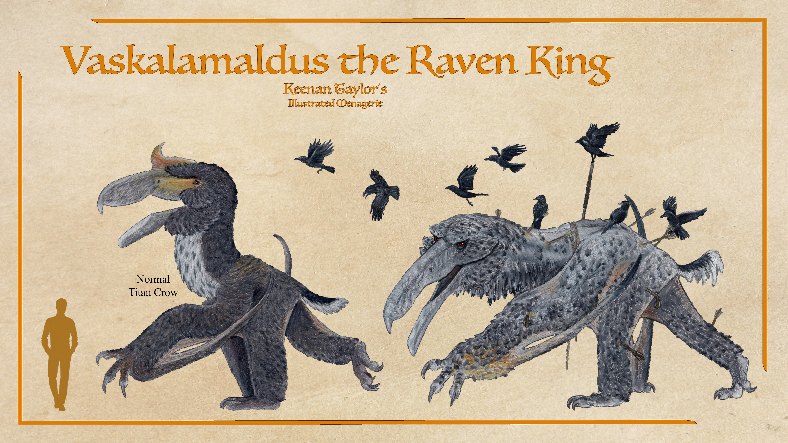
The man-eating titan crow Vaskalamaldus, a large tapajarid comparable in general scale to Quetzalcoatlus, is an example of such a warped organism. His extraordinary behavior and predatory tendencies are associated with an aggressive magical infection that substantially alters its host. It illustrates the ecological consequences that can occur when a volatile microbial swarm successfully occupies a large animal.
Aggressive magic remains rare because its strategy is generally unsustainable. Most strains do not successfully establish stable populations, and even those that find suitable hosts frequently destroy the conditions necessary for their own continued survival.
12 · Origins of Witches and Skin-Changers
Interactions Between Viral and Hereditary Magic
The relationship between viral and hereditary magic is normally characterized by separate forms of host association. However, under certain circumstances, an aggressive or unusually powerful viral swarm may encounter a host that already possesses a substantial hereditary microbial population.
These interactions are not invariably successful. The two microbial populations may compete for control of the host, resulting in the death of the organism and the destruction of both swarms. In some cases, however, the two populations appear to establish a form of coexistence.
Such associations are exceptionally unusual. The host may retain the benefits of its hereditary symbiosis while also accommodating a powerful viral swarm. The combination can produce an organism capable of enduring substantial physical punishment and exerting unusual influence over its surroundings.
The precise nature of these relationships is poorly understood. It is not known whether the swarms establish an actual cooperative arrangement, whether one population suppresses the most destructive activities of the other, or whether their coexistence simply reflects an unusual physiological compatibility within the host. Nevertheless, the phenomenon is important because it provides a plausible biological explanation for some of the most dramatic forms of magic observed in Kaimere.
Scholars have proposed that such associations may be responsible for the origins of witchcraft and skin-changing. The possibility that two otherwise distinct microbial populations can coexist within a host, producing effects beyond those normally associated with either strain, has significant implications for understanding the biological basis of these phenomena.
13 · Magic at its peak
The First Witches and the Origin of Skin-Changing
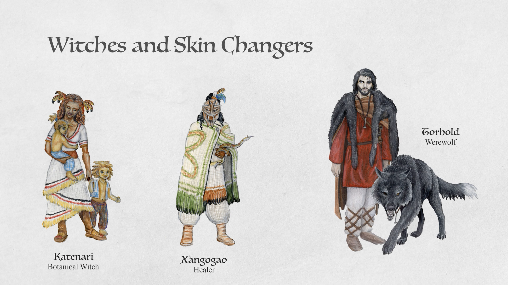
The origins of witches are generally attributed to a rare interaction between hereditary magic and a powerful viral swarm. According to current scholarly interpretations, the first witches may have been organisms whose inherited symbiotic populations were supplemented by unusually potent viral magic.
The resulting association may have allowed the host to retain its normal biological functions while acquiring additional capacities associated with the viral swarm. These could include greater durability, unusual physiological control, and the ability to alter the surrounding environment. The resulting organisms would have appeared fundamentally different from ordinary hosts, particularly to observers unaware of the microbial processes responsible for their abilities.
Skin-changing is also theorized to have originated through a similar process. Although the exact mechanisms remain unknown, the ability to alter the form of a host is considered potentially related to the coordinated activity of multiple magical populations. The capacity of swarms to influence host physiology provides a biological basis for considering such transformations possible within Kaimere's unusual microbial ecology.
These interpretations remain hypotheses rather than established conclusions. The precise origin of witches and skin-changers has not been demonstrated, and the available evidence does not establish whether all such phenomena share the same biological mechanism. Nevertheless, the interaction between viral and hereditary magic is considered one of the most promising explanations for the development of the more powerful and unusual forms of magic.
The distinction between ordinary host-bound magic and these exceptional cases is important. Most magical organisms maintain subtle relationships with their hosts, while the more dramatic effects associated with witches and skin-changers appear to require unusual biological circumstances. Their rarity is consistent with the difficulty of maintaining a stable coexistence between microbial populations that may otherwise compete for control of the same organism.
14 · Powers of the "Gods"
The First Children and the Deliberate Manipulation of Magic

The history of host-bound magic also provides a possible explanation for the unusual abilities attributed to the First Children, an extinct people whose knowledge of Kaimere's indigenous microorganisms appears to have been considerably more advanced than that of later civilizations.

Scholars of the Great Library of Bolondakoi believe that the First Children eventually developed methods of manipulating magical strains and their relationships with multicellular hosts. Rather than relying entirely upon naturally occurring symbioses, they may have learned to deliberately cultivate, combine, and direct particular forms of magic for their own purposes.
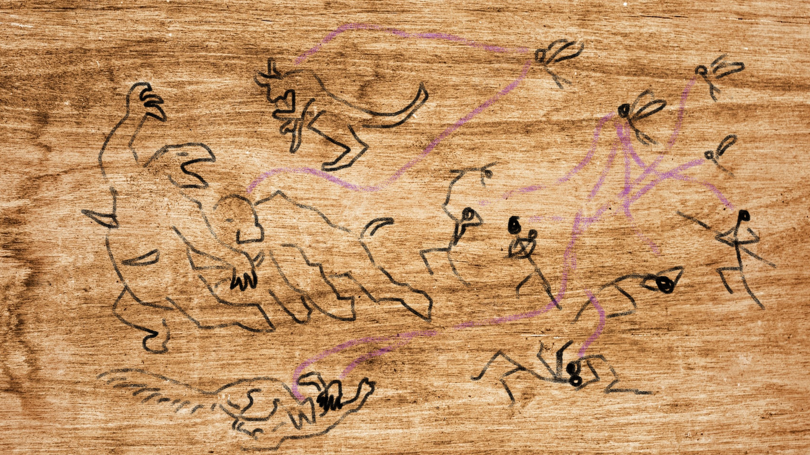
This interpretation is based upon accounts preserved in Kaimeran cave art and the unusual written records attributed to the First Children. Their writing has not yet been deciphered, and the available evidence does not provide a definitive explanation of their practices. Consequently, the nature and extent of their biological knowledge remain uncertain.
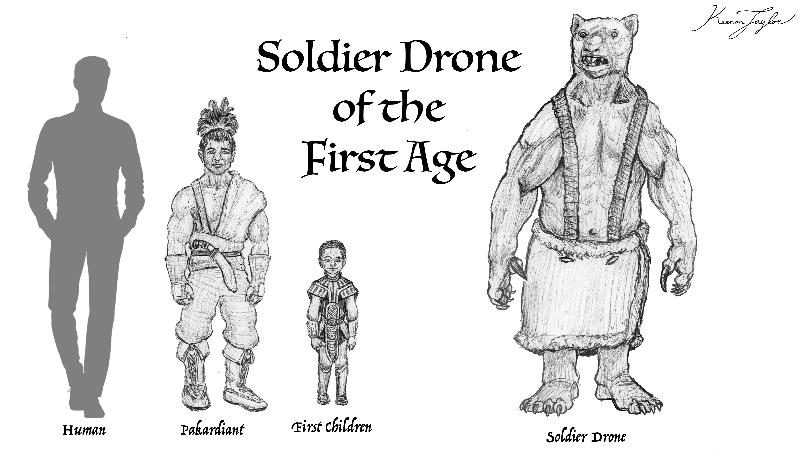
Several possible applications have been proposed. Some scholars believe the First Children developed altered organisms for warfare, creating hosts capable of extraordinary physical endurance, aggression, or environmental manipulation. Others suggest that they may have used magical organisms to produce specialized bodies intended to house their gods. These interpretations remain speculative, although both are consistent with the unusual abilities attributed to the First Children in later traditions.
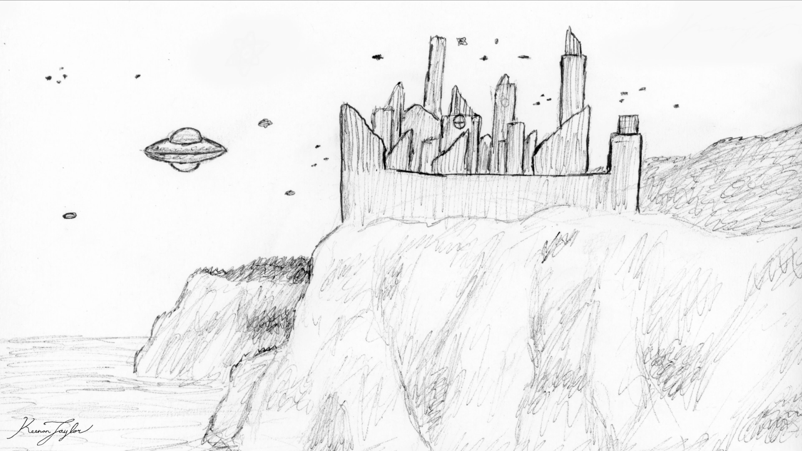
The First Children's apparent mastery of magic suggests that they recognized the biological nature of the indigenous swarms and discovered ways to manipulate their relationships with multicellular organisms. If correct, this would represent a remarkably advanced form of biological knowledge, involving not merely the treatment of magical infections but the deliberate modification of entire host-swarm systems.
Their disappearance has left considerable uncertainty regarding the extent of this knowledge. The available written evidence remains undeciphered, while later accounts are filtered through the cultural traditions of Kaimerans. It is therefore impossible to reconstruct the precise techniques employed by the First Children, or determine whether their practices were based upon the same understanding of magic that modern scholars have developed.
Nevertheless, their history is significant because it suggests that the most dramatic forms of magic may not have been purely accidental products of natural microbial evolution. Some may have been deliberately cultivated or manipulated by intelligent organisms with an understanding of the indigenous biosphere.
15 · Why it matters
The Ecological Importance of Native Life
The indigenous microorganisms of Kaimere remain fundamental to the functioning of the planet's modern ecosystems. Although they are largely invisible and are overshadowed by the enormous multicellular organisms introduced through the Portal, their ecological influence is extensive.
Purple algae and other photosynthetic microorganisms contribute substantially to the primary productivity of the oceans and waterways. Their biomass supports aquatic food webs, providing energy for the many smaller organisms upon which larger fish, marine reptiles, and cetaceans ultimately depend. The exceptionally productive marine ecosystems of Kaimere are therefore partly a consequence of the continued presence and abundance of native photosynthetic life.
Other indigenous organisms influence the distribution of nutrients and the physical structure of their surroundings. By breaking down barriers, moving materials, and retrieving resources, environmental manipulating swarms contribute to the formation and maintenance of local habitats. Their collective activities can alter the availability of resources to other organisms, creating ecological conditions that would otherwise be difficult to sustain.
The Portal swarms have had an especially profound effect. Their ability to cultivate purple algae and reproduce desirable resources helped shape the planet's ecosystems long before the arrival of Earth-derived plants and animals. Their environmental engineering created conditions that favored their own survival, while the biological replication system eventually introduced multicellular life on an extraordinary scale.
Host-bound magic also continues to influence the ecology of Kaimere. Its effects can determine the longevity, durability, and physiological characteristics of individual animals, while unusual infections can produce organisms capable of profoundly disturbing local ecosystems. Although most microbial relationships remain subtle, their cumulative effects are an important component of the planet's biological distinctiveness.
The indigenous biosphere is therefore not simply a surviving remnant of a primordial microbial world. It remains an active component of the modern ecosystem, interacting with Earth-derived organisms and influencing their evolutionary success. The relationship between the two is particularly unusual because the multicellular organisms that dominate the visible biosphere depend upon an indigenous microbial foundation that developed independently of them.